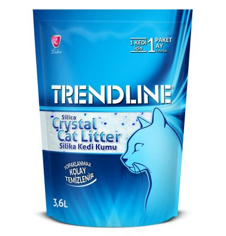

TRENDLİNE KRİSTAL KEDİ KUMU 3.6 L
KULLANMA TALİMATI
*silika kedi kumunu ilk defa kullanıyorsanız eski kumla karıştırarak kullanınız.
*Kedi tuvalet kabına 1 paketi boşaltınız.
*Her gün kirli parçaları atın ve kalan kumu bir kürek yardımıyla karıştırın.
*Kum kutusunu yemek yenen bölgelerden , hamile kadınlardan uzak ve kuru bir yerde bulundurunuz.
*Kullanılmış kedi kumuyla her temastan sonra ellerinizi mutlaka yıkayınız.
*Kum kabını ayda bir (birden fazla kedi aynı kum kabını kullanıyorsa süre azalabilir) boşaltıp yıkayarak temizleyiniz.
**3,6 L 'dir.
***Kullanımı , temizliği ve kum değişimi kolaydır.
***Diğer kedi kumlarına göre daha az sıklıkta değiştirilir.
***Çevre dostudur , toksik madde içermez.
***Topaklaşmaz , kedinizin patisine yapışmaz.